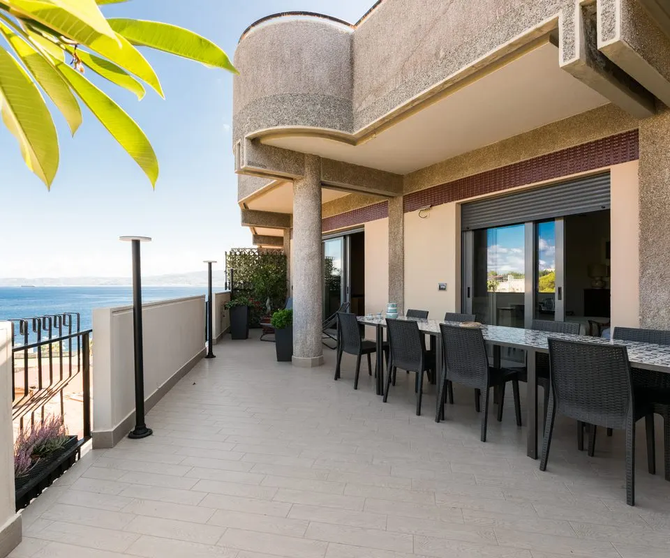

Konnektivität
- Kostenloses Dual-Band-WLAN (5G und 2,4G)
- TV in jedem Zimmer
- USB-Ladestation (6 Anschlüsse)
- Heimkino-Beamer
Milazzo · Sizilien
Eleganz, Komfort und atemberaubende Panoramen im Herzen von Milazzo. Private Terrasse, Garage, Heimkino und alles, was Ihren Aufenthalt einzigartig macht.
5.0

Die Wohnung
Übernachten Sie in einer eleganten, unabhängigen Penthouse-Wohnung, die höchste Entspannung und Wohlbefinden bietet. Jedes Detail wurde sorgfältig gestaltet, um Ihnen ein einzigartiges und unvergessliches Erlebnis zu bieten — nur wenige Schritte von Restaurants, Bars, Stränden und dem Hafen zu den Äolischen Inseln entfernt.
Fotografien
Helle Räume, stilvolle Einrichtung und Ausblicke, die den Atem rauben
Ausstattung
Die Wohnung wurde sorgfältig ausgestattet, um Ihnen einen komfortablen und sorgenfreien Aufenthalt zu garantieren
Lage
Via Cristoforo Colombo, 7 — nur wenige Schritte von Restaurants, Bars, Supermärkten, Stränden und dem Hafen zu den Äolischen Inseln.
Zu Fuß vom Attico
Milazzo entdecken
Milazzo ist nicht nur ein Ausgangspunkt zu den Äolischen Inseln: Es ist eine Stadt voller Geschichte, Strände und einzigartiger Ausblicke — alles zu Fuß von unserer Wohnung aus zu erkunden.
Der Hafen ist 15 Gehminuten entfernt. Tragflügelboote und Fähren verbinden alle 7 Inseln: Lipari, Vulcano, Salina, Stromboli, Panarea, Filicudi und Alicudi. Ideal für Tagesausflüge.
Die größte befestigte Zitadelle Siziliens, über 7 Hektar Geschichte. Im Inneren der Alte Dom (1608) und das MuMa — Meeresmuseum. 10 Gehminuten von der Wohnung.
Ponente-Strand 5 Gehminuten entfernt, Baia del Tono und der spektakuläre Venuspool — ein natürlicher Pool an der äußersten Spitze des Kap Milazzo, einem 8 km langen Vorgebirge im Tyrrhenischen Meer.
Frischer Fisch, Arancini, sizilianische Granita und Ätna-Weine. Nur wenige Schritte entfernt finden Sie La Campagnola, Macchianera und viele andere typische Restaurants. Die Fußgängerzone ist das Herz des Abendlebens.
Von Catania (CTA): 1 Std. 40 über A18+A20. Von Palermo (PMO): 2 Std. 15 über A20. Von Messina: 35 Min. über A20. Bahnhof Milazzo an der Strecke Messina–Palermo.
716 v. Chr. von den Griechen gegründet, Schauplatz des ersten Seesiegs Roms (260 v. Chr.) und der Schlacht Garibaldis (1860). Das Heiligtum San Francesco di Paola ist das einzige in Sizilien, das diesem Heiligen gewidmet ist.
Kalender
Wählen Sie An- und Abreisedatum: Wir bereiten die WhatsApp-Nachricht für Sie vor, Sie müssen sie nur noch senden.
Bewertungen
Häufige Fragen
Die Wohnung befindet sich in der Via Cristoforo Colombo 7, im historischen Zentrum von Milazzo (ME), Sizilien. Restaurants, Bars, Supermärkte, Strände und der Hafen zu den Äolischen Inseln sind nur wenige Schritte entfernt.
Die Wohnung bietet Platz für bis zu 8 Gäste. Sie verfügt über 3 Schlafzimmer (zwei Doppelzimmer und eines mit zwei Einzelbetten), ein Doppelschlafsofa im Wohnzimmer, eine voll ausgestattete Küche und eine Panoramaterrasse.
Ja, die Wohnung verfügt über eine private Garage mit Zugang per Fernbedienung, ohne zusätzliche Kosten.
Das Attico Panoramico hat auf Airbnb eine Bewertung von 5,0 von 5 bei 82 Gästebewertungen. Auf Booking.com erreicht es 9,8 von 10 (22 Bewertungen) und auf Vrbo 9,6 von 10 (5 Bewertungen).
Schreiben Sie uns auf WhatsApp unter +39 388 077 5449: So erfahren Sie am schnellsten alles über Verfügbarkeit und Buchung.
Milazzo bietet die Burg und befestigte Zitadelle (die größte Siziliens, über 7 Hektar), das Kap Milazzo mit dem Venuspool, die Strände Ponente und Baia del Tono, die Altstadt mit Fußgängerzone, das Heiligtum San Francesco di Paola und das MuMa — Meeresmuseum.
Der Hafen von Milazzo ist 15 Gehminuten von der Wohnung entfernt. Tragflügelboote und Fähren verbinden alle 7 Äolischen Inseln (Lipari, Vulcano, Salina, Stromboli, Panarea, Filicudi, Alicudi) — ideal für Tagesausflüge.
Von Catania Fontanarossa (CTA): 1 Std. 40 über die A18+A20. Von Palermo Falcone-Borsellino (PMO): 2 Std. 15 über die A20. Von Messina: 35 Minuten über die A20. Milazzo hat außerdem einen Bahnhof an der Strecke Messina–Palermo.
Ihren Aufenthalt buchen
Kontaktieren Sie uns direkt für Informationen, Verfügbarkeit und Preise: Wir antworten auf WhatsApp.